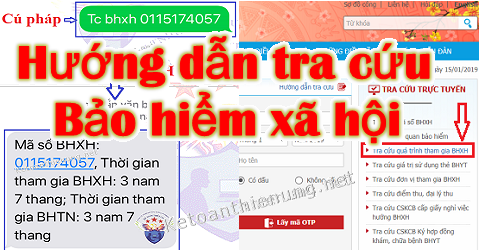
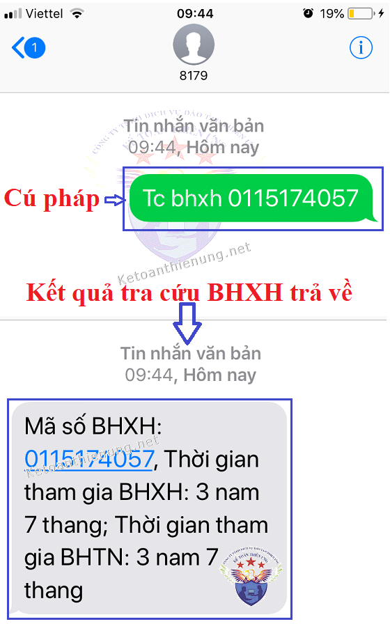
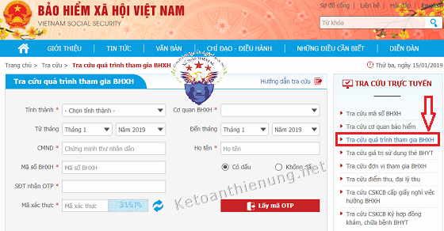
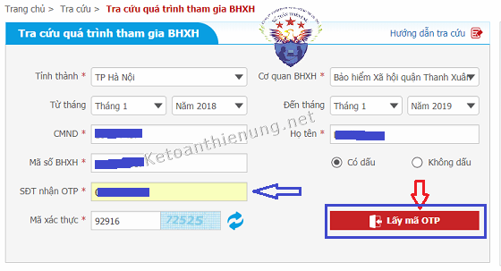
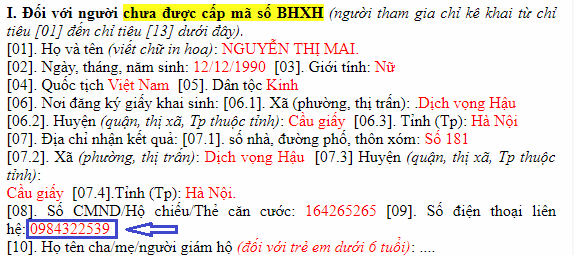
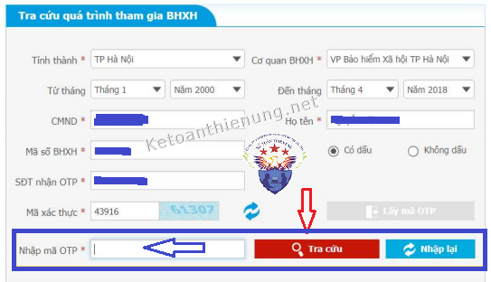
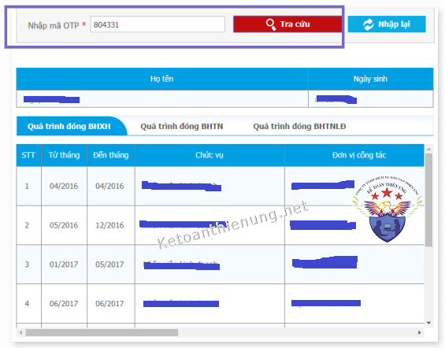

Hướng dẫn tra cứu Bảo hiểm xã hội: Tra cứu thông tin bảo hiểm xã hội bằng tin nhắn điện thoại; Tra cứu kết quả đóng BHXH qua mạng online; Tra cứu quá trình đóng BHXH xem Doanh nghiệp có đóng cho người lao động không.

Hiện tại có 2 cách tra cứu Báo hiểm xã hội đó là:
- Tra cứu BHXH bằng tin nhắn SMS điện thoại
- Tra cứu BHXH online qua mạng.
-> Các bạn có thể: Tra cứu thời gian đóng BHXH; Thời hạn của thẻ BHYT; Hồ sơ tham gia BHXH đã xử lý chưa...
-------------------------------------------------------------------
Cách 1: Tra cứu thông tin BHXH bằng tin nhắn điện thoại:Tin nhắn theo cú pháp (cho Doanh nghiệp và cá nhân tự tra cứu)
| STT | Mô tả | Cú pháp gửi tin nhắn |
| 1 | Tra cứu thời gian tham gia BHXH |
- Cú pháp: BH<dấu cách>QT<dấu cách>Mã số BHXH gửi 8079 (Cước phí 1.000 đồng/tin nhắn) Ví dụ: Soạn BH QT 0110129425 gửi 8079 Nội dung tin nhắn nhận được: Mã số BHXH: 0110129425, Thời gian tham gia BHXH: 9 năm 7 tháng; Thời gian tham gia BHTN: 8 năm 8 tháng |
| 2 | Tra cứu thời gian tham gia BHXH theo khoảng thời gian |
- Cú pháp: BH<dấu cách>QT<dấu cách>Mã số BXHH<dấu cách>Từ tháng – năm<dấu cách>Đến tháng – năm gửi 8079 Ví du: Soạn BH QT 11012942 012019 022021 gửi 8079 Nội dung tin nhắn nhận được: Mã số BHXH: 0110129425, Thời gian tham gia BHXH: 2 năm; Thời gian tham gia: 2 năm (Tổng thời gian tham gia BHXH: 9 năm 7 tháng; Tổng thời gian tham gia BHTN là 8 năm 8 tháng) |
| 3 | Tra cứu thời gian tham gia BHXH theo khoảng thời gian theo năm |
- Cú pháp: BH<dấu cách>QT<dấu cách>Mã số BXHH<dấu cách>Từ năm<dấu cách>Đến năm gửi 8079 Ví dụ: Soạn BH QT 0110129425 2019 2021 gửi 8079 Nội dung tin nhắn nhận được: Mã số BHXH: 0110129425, Thời gian tham gia BHXH: 1 năm 11 tháng; Thời gian tham gia BHTN: 1 năm 6 tháng (Tổng thời gian tham gia BHXH: 9 năm 7 tháng; Tổng thời gian tham gia BHTN là 8 năm 8 tháng) |
| 4 | Tra cứu thời hạn sử dụng thẻ BHYT |
- Cú pháp: BH<dấu cách>THE<dấu cách>Mã thẻ BHYT gửi 8079 Ví dụ: Soạn BH THE HC4010110129425 gửi 8079 Nội dung tin nhắn nhận được: Mã thẻ: HC40101101129425, Nơi ĐKKCB BĐ: Bệnh viện đa khoa huyện Đan Phượng, Giá trị sử dụng từ 01/01/2021 đến 31/12/2021, Thời điểm đủ 05 năm liên tục từ ngày 30/6/2021. |
| 5 | Tra cứu hồ sơ đã nộp, tình trạng hồ sơ |
- Cú pháp: BH<dấu cách>HS<dấu cách>Mã hồ sơ gửi 8079 Ví dụ: Soạn BH HS 04486.G/2020/08708 gửi 8079 Nội dung tin nhắn nhận được: Hồ sơ 03524_G/2020/04904: BHXH đã xử lý xong hồ sơ. Vui lòng đến nhận kết quả. |
----------------------------------------------------------------------------
Ví dụ: Ông Minh Quân có Số sổ BHXH: 0115174057, ông muốn Tra cứu thời gian tham gia BHXH.
- Soạn tin nhắn: TC BHXH 0115174057 -> gửi đến 8179.
- Thực hiện như sau:

--------------------------------------------------------------------------------------------------------
Cách 2: Hướng dẫn tra cứu BHXH qua mạng:
- Đầu tiên các bạn truy cập: (Đây là website của Bảo hiểm xã hội Việt Nam)
- Tiếp đó các bạn nhập thông tin như hình bên dưới nhé:

Lưu ý:
- Mục "Tra cứu mã số BHXH" là áp dụng đối với Gia đình, Cá nhân tham BHXH tự nguyện.
- Mục "Tra cứu quá trình tham gia BHXH" là áp dụng đối với Người lao động làm việc tại các Doanh nghiệp, Tham gia BHXH qua các Doanh nghiệp đó.
- Bài viết này Kế toán Diệu Tâm sẽ hướng dẫn tra cứu thông tin đóng BHXH đối với Người lao động tham gia BHXH qua các Doanh nghiệp, tổ chức nhé.
- Mục "Tra cứu mã số BHXH" là áp dụng đối với Gia đình, Cá nhân tham BHXH tự nguyện.
- Mục "Tra cứu quá trình tham gia BHXH" là áp dụng đối với Người lao động làm việc tại các Doanh nghiệp, Tham gia BHXH qua các Doanh nghiệp đó.
- Bài viết này Kế toán Diệu Tâm sẽ hướng dẫn tra cứu thông tin đóng BHXH đối với Người lao động tham gia BHXH qua các Doanh nghiệp, tổ chức nhé.
-----------------------------------------------------------------------------------------
- Sau khi đã truy cập vào website của BHXH Việt Nam, các bạn chọn Mục: "Tra cứu quá trình tham gia BHXH" -> Tiếp đó là nhập các thông tin theo yêu cầu như: Tỉnh, thành; Số CMND, Số sổ BHXH, họ tên ...
- Tỉnh thành: Là Tỉnh thành mà DN bạn đóng BHXH ở đó
- Cơ quan BHXH: Là cơ quan BHXH Quận, Huyện mà DN bạn đóng ở đó
- Tỉnh thành: Là Tỉnh thành mà DN bạn đóng BHXH ở đó
- Cơ quan BHXH: Là cơ quan BHXH Quận, Huyện mà DN bạn đóng ở đó

Chú ý:
- Để có thể tra cứu được thông đóng BHXH của bản thân thì các bạn phải -> Nhập Số điện thoại mà các bạn đã đăng ký với cơ quan BHXH theo mẫu TK1-TS
VD: Bạn Nguyễn thị Mai Đăng ký Mẫu TK1-TS với cơ quan BHXH theo SĐT: 0912468357 -> Thì nhập vào Dòng "SĐT nhận OTP *" là: 0912468357 -> Tiếp đó nhập Mã xác thực -> Rồi ấn "Lấy mã OTP"
VD: Bạn Nguyễn thị Mai Đăng ký Mẫu TK1-TS với cơ quan BHXH theo SĐT: 0912468357 -> Thì nhập vào Dòng "SĐT nhận OTP *" là: 0912468357 -> Tiếp đó nhập Mã xác thực -> Rồi ấn "Lấy mã OTP"

|
Cách đăng ký số điện thoại để tra cứu quá trình tham gia BHXH - Đơn vị (Doanh nghiệp) khi có phát sinh tăng mới lao động đối với trường hợp chưa có mã số BHXH hoặc chưa cung cấp số điện thoại cho cơ quan BHXH hướng dẫn người tham gia kê khai tờ khai TK1-TS (ban hành kèm Quyết định 888/QĐ- BHXH) với đầy đủ thông tin và số điện thoại di động của cá nhân người tham gia, gửi hồ sơ điện tử theo mã thủ tục 122QD1259N đến cơ quan BHXH. - Đối với người đang tham gia BHXH, BHYT, BHTN, BHTNLĐ, BNN; đơn vị thu thập các thông tin còn thiếu và số điện thoại di động của cá nhân người tham gia, lập Mẫu TK1-TS, gửi hồ sơ điện tử theo mã thủ tục 122QD1259N. Trường hợp đơn vị sử dụng lao động có số lao động lớn lập danh sách D02-LT bố sung số điện thoại di động của người lao động vào cột ghi chú, trên sheet import_SMS có trường (SDT) số điện thoại, gửi hồ sơ điện tử theo mã thủ tục 122QD1259N đến cơ quan BHXH. - Đối với người lao động đã nghỉ việc: kê khai Mẫu TK1-TS gửi trực tiếp cơ quan BHXH nơi cư trú để bổ sung hoặc điều chỉnh số điện thoại cá nhân. |
Tiếp đó: Cơ quan BHXH sẽ gửi MÃ OTP qua sđt mà các bạn đã đăng ký:

Cuối cùng: Kết quả sẽ như hình ảnh bên dưới:

Chúc các bạn thành công!
- Nếu có vướng mắc các bạn có thể liên hệ theo số điện thoại hỗ trợ trên website của Cơ quan BHXH nhé.
--------------------------------------------------------------------------------------------------------
- Ngoài ra trước đây Bảo hiểm xã hội của 1 số Tỉnh, Thành phố đã cung cấp dịch vụ tra cứu thông tin về việc đóng Bảo hiểm xã hội online của người lao động trên địa bàn thành phố, cụ thể như sau:
Bước 1:
1. Nếu bạn ở Hà Nội
- Truy cập vào địa chỉ:

2. Nếu bạn ở TP.HCM
- Truy cập vào địa chỉ:

3. Tại Đà Nẵng:
4. Tại Hải phòng:
5. Tại Quảng Ninh:
6. Tại Thái nguyên:
Bước 2:
- Nhập số sổ BHXH hoặc mã thẻ BHYT
-> Nhập số CMND
-> Nhập năm sinh (chỉ năm sinh)
-> Nhập năm thông báo cần tra cứu:
-> Nhập mã xác nhận hiển thị trên màn hình.
-> Sau đó bấm tìm kiếm và xem kết quả trên trang web.
Lưu ý:
- Trong quá trình tra cứu, có thể do dữ liệu về thông tin cá nhân của một số người lao động (số CMND và ngày tháng năm sinh) chưa đầy đủ, chính xác nên trong trường hợp không tìm ra thông tin mà đã nhập đủ các thông số theo yêu cầu của trang web thì người lao động liên hệ với đơn vị sử dụng lao động đang tham gia BHXH để phối hợp với cơ quan BHXH chỉnh sửa dữ liệu.
- VIệc điều chỉnh dữ liệu về các thông tin về mức đóng, chức danh, thông tin cá nhân... thực hiện trong năm này sẽ được thông báo vào kết quả đóng BHXH, BHYT của năm sau.
__________________________________________________
Các bạn muốn học thực hành làm kế toán tổng hợp trên chứng từ thực tế, thực hành xử lý các nghiệp vụ hạch toán, tính thuế, kê khai thuế GTGT. TNCN, TNDN... tính lương, trích khấu hao TSCĐ....lập báo cáo tài chính, quyết toán thuế cuối năm ... thì có thể tham gia: Lớp học kế toán thực hành thực tế tại Kế toán Diệu Tâm